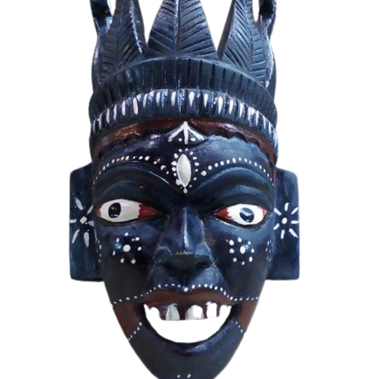
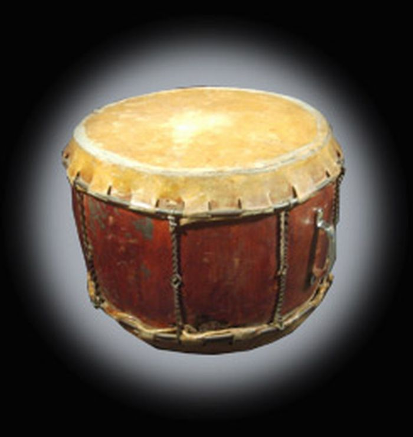

🎨✨ Mizoram’s Timeless Treasures: A Legacy of Art & Handicrafts 🎨✨
🖼️ Traditional Art Forms – Rustic Strokes & Timeless Prints 🖌️

Tribal Masks and Artifacts 🖼️ – Crafted for cultural events, storytelling, and festivals, representing Mizo folklore.
Traditional Musical Instruments 🎶 – Locally made instruments like Khuang (drum) and Tingtang (string instrument), used in Mizo folk music and dances.

Beadwork and Jewelry 📿 – Handmade beaded ornaments and accessories, often worn during festivals and celebrations.
🪡 Handicrafts – Marvels of Craftsmanship
Bamboo and Cane Crafts 🎋 – Beautifully handcrafted baskets, furniture, hats, mats, and home decor items, made from locally available bamboo and cane.


Handmade Rugs and Mats 🏡 – Beautifully woven from bamboo and grass, used for home decor and daily use.
Pottery and Clay Crafts 🏺 – Traditional clay pots and decorative items, though less common, still hold cultural significance.

🪢 Textile and Weaving Heritage – Threads of Elegance

Handloom Weaving 🧵 – Traditional textiles like Puan, woven with intricate patterns and vibrant colors, form an essential part of Mizo attire.
🛕 Stone and Wood Carving – Precision and Perfection

Wood Carving 🪵 – Intricate woodwork seen in furniture, panels, and decorative pieces, showcasing Mizo craftsmanship.